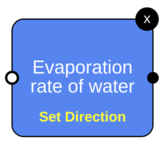
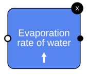
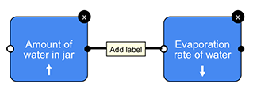
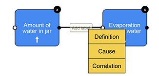

Reminder: The Three Parts of your Hypothesis include...
A general prediction of the relationship between your
independent and dependent variables.
A detailed scientific explanation of your general prediction.
This should include a step-by-step explanation for how and why the
independent variable affects the dependent variable.
A specific prediction for the results of your experiment.
Lesson Overview
In this lesson, we will focus on the first two parts of your hypothesis:
the general prediction and detailed scientific explanation for your
general prediction.
You will make a general prediction for your experiment. For example,
your general prediction could be either:
"As the initial water temperature increases, the weight of crystal
growth on the string after two weeks increases."
This means that the hotter the water is at first, the higher the
final weight of crystal growth will be.
- OR -
"As the initial water temperature increases, the weight of crystal
growth on the string after two weeks decreases."
This means that the hotter the water is at first, the lower the
final weight of crystal growth will be.
You will also write a scientific explanation for your general
prediction. We’ll help you do that.
Lesson Overview
Before you make your general prediction and scientific explanation,
we'll discuss how you can use a "concept map" to help you write a
detailed explanation for your prediction.
Then we'll ask you to make a general prediction for the relationship
between water temperature and weight of crystal growth on a string.
After that, you will first write a scientific explanation for your
general prediction.
Finally, you'll make a concept map to help you improve on your
scientific explanation.
For example, a change in how distracted people are while driving affects
how well people drive, because people's attention is shifted away from
the road.
Or, changing the amount of caffeine we drink causes a change in how
how alert we are, because caffeine is a chemical that increases brain
activity.
School candy sales and number of science fair poster awards
Humidity and the amount of water in the air
How hard you push on an object and how much the object moves
Friction and force of resistance to motion on a surface
Concepts:
Concept Map Help
Adding Concepts
Simply select a concept from the "Select Concept to Add" drop-down.
Moving Concepts
To re-position a concept, click and drag it with your mouse.
Deleting Concepts
Click on the little "x" in the top right corner of the box. You
can always re-add the concept if you change your mind.

Setting Concept Directions
Click on a concept's yellow "Set Direction" text, and from the
drop-down which appears, select either "increases" for an upward
arrow, or "decreases" for a downward arrow.

Connecting Concepts
Click on a concept's black dot, and drag the line (which will
appear) to the white dot of the concept you wish to connect it to.
When you do that, an ‘add label’ drop-down will appear. NOTE: if the two concepts are closer to each other than
the width of the 'add label' box, you won't be able to connect
them, and will need to re-position the concepts first.

Labeling Arrows
Click the “Add label” box located on your connection line. A
drop-down selection will appear. Simply select your label.

Everything is now labeled and connected properly. This does
not mean that your work is conceptually correct.
Warning: If you click 'Save', you won't be able to make any changes.
If you are finished, click 'Save'. If you wish to continue working,
click "Cancel".
Please copy/paste your hypothesis into your notepad or worksheet.
Click 'Download' to download the image of your concept map. Submit
this file to your teacher or parent along with your
notepad or worksheet.
If you go back to the home page, you will lose all your progress.
Are you sure you wish to proceed?
You are now done with this section. Click Home to move on to the next
section.